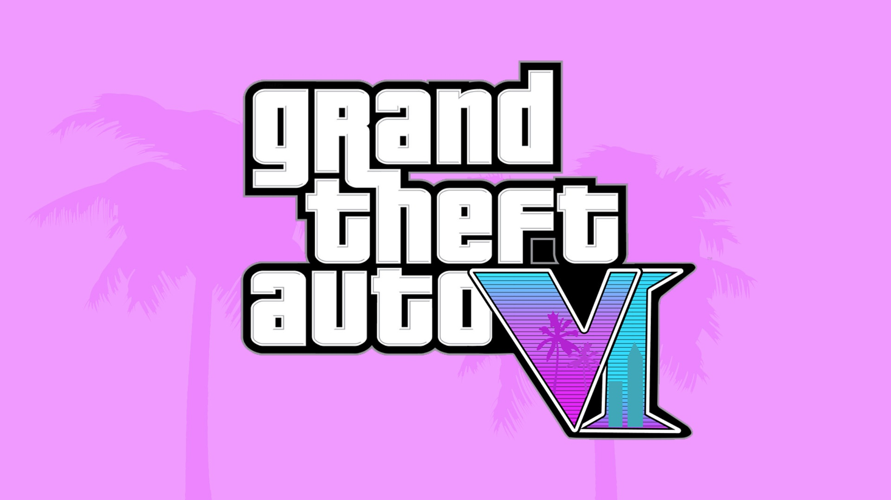
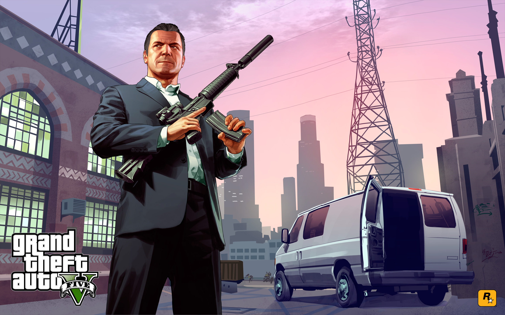

Nesta página, você vai encontrar mais informações sobre GTA 5 e GTA 6, dois dos jogos mais populares e esperados da franquia Grand Theft Auto. Você vai saber mais sobre a história, os personagens, as novidades e as curiosidades desses títulos, que prometem muita diversão e emoção para os fãs de GTA.
Ir para GTA 5 | Ir para GTA 6
A história de GTA 5 é dividida em três atos, cada um com várias missões que envolvem os três protagonistas. O primeiro ato apresenta os personagens e suas motivações, o segundo ato mostra o desenvolvimento dos planos dos criminosos e o terceiro ato traz o desfecho da trama, que pode variar de acordo com a escolha do jogador.
Michael é um ex-assaltante de bancos que vive uma vida de luxo em Los Santos, mas que está insatisfeito com sua família e seu programa de proteção à testemunha. Franklin é um jovem que trabalha como recuperador de carros para um agiota, mas que sonha em ascender no mundo do crime. Trevor é um ex-parceiro de Michael, que vive em uma área rural e lidera uma gangue de traficantes e contrabandistas.
Os três se reúnem após um golpe mal-sucedido e passam a realizar vários trabalhos para diferentes criminosos e organizações, como a máfia, o governo e a FIB (paródia da FBI). Eles também têm que lidar com seus próprios problemas pessoais e inimigos, como o empresário corrupto Devin Weston e o líder de um cartel mexicano, Martin Madrazo.
No final do jogo, o jogador pode escolher entre três opções: matar Trevor, matar Michael ou salvar os dois e eliminar seus inimigos. Cada escolha tem suas consequências e implicações para os personagens e o mundo do jogo.
GTA 5 trouxe várias novidades para a franquia, tanto em termos de jogabilidade quanto de conteúdo. Algumas das principais novidades são:
GTA 5 é um jogo cheio de curiosidades, referências e homenagens a diversos elementos da cultura pop, como filmes, séries, músicas, celebridades e outros jogos. Algumas das curiosidades mais interessantes são: